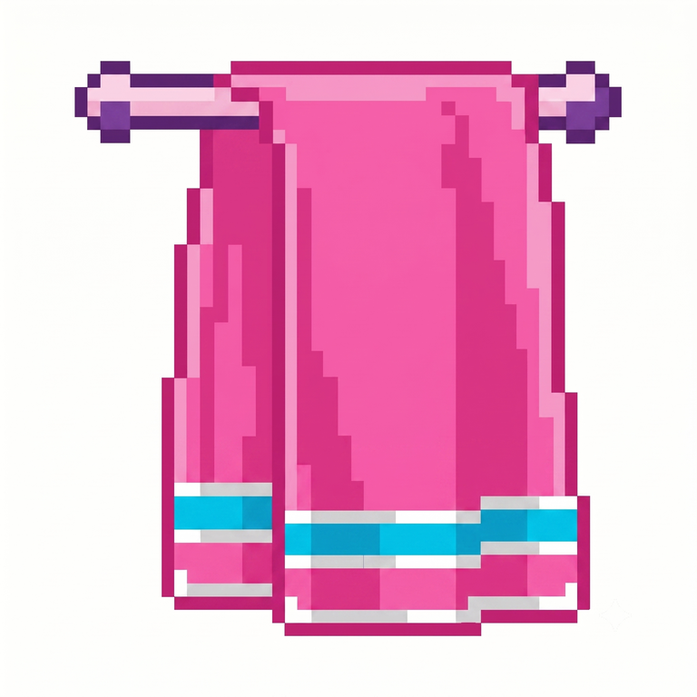

Agent + Harness
Invokes a capability by name through a private stdio channel.
github-read

Toweltwl
Your agent needs GitHub, an internal API, or another authenticated service. Normally that means putting a reusable secret inside the agent process. Towel keeps the credential in a separate trusted process and gives the agent only the authority it needs.
Apache-2.0 · Keychain or age vault · no TLS interception
# The agent asks for a named capability
→ twl_request github-read
GET /repos/my-org/my-repo/pulls
# Towel adds the real token and forwards it
← 200 application/json
# Inside the agent process
$ printenv GITHUB_TOKEN
(nothing — the token never went there)The agent names a capability. It never names a host, and it never holds the key. A macOS Keychain record or Linux password-encrypted age vault binds every route to its credential, its exact destination, and the capability policy that narrows it.
Invokes a capability by name through a private stdio channel.
github-read
Checks method, path and bounds, then injects the real credential.
real keys · fixed URLs
Receives the request with real Bearer authentication.
HTTPS · no redirects
A Harness invokes named capabilities such as github-read, constrained by HTTP method, normalized path prefix, destination, and response size.
For software that already reads a key from the environment, Towel hands the child a fake key and a loopback URL, then substitutes the real credential on the way out.
A twl_request tool owns one Towel child process through Harness lifecycle effects and contains no credential-resolution logic.
Towel keeps the reusable credential out of the agent. It does not make the authority behind that credential harmless: anything the granted capability can legitimately access is still available to the agent.
The demo creates a canary credential and a local service, then runs
the same application contract used by a real session. Nothing
touches a real account. twl capability demo --stdio
exercises the capability protocol the same way.
bash$ cargo build --locked
$ ./target/debug/twl demo \
--config examples/towel.yaml \
-- python3 examples/application_client.py
twl: demo mode uses a generated canary; no real credential is read
{"app": "ok", "upstream": {"path": "/v1/models",
"headers": {"authorization": "<received, 47 bytes>", …}}}
Prebuilt archives cover macOS (Apple Silicon and Intel) and Linux
(x86-64 and ARM64). Linux binaries are statically linked against
musl and run on any distribution with nothing else installed. macOS
archives contain a Developer ID-signed, notarized and stapled
TowelCLI.app, so Gatekeeper accepts it directly.
bash# Linux — download from the releases page, then
$ tar xzf twl-*-x86_64-unknown-linux-musl.tar.gz
$ gh attestation verify twl-*/twl \
--repo luciobaiocchi/twl
✓ verified provenance
$ sudo install -m755 twl-*/twl /usr/local/bin/twl
$ twl doctor
encrypted Linux project sessions: availableDouglas Adams made the towel an icon of lightweight, improbable usefulness. This one is similarly unassuming: keep it beside your agent, put the dangerous credential behind it, and don't panic.
Towel is Apache-2.0 licensed. Security reviews, adversarial tests, and focused integrations are especially welcome.